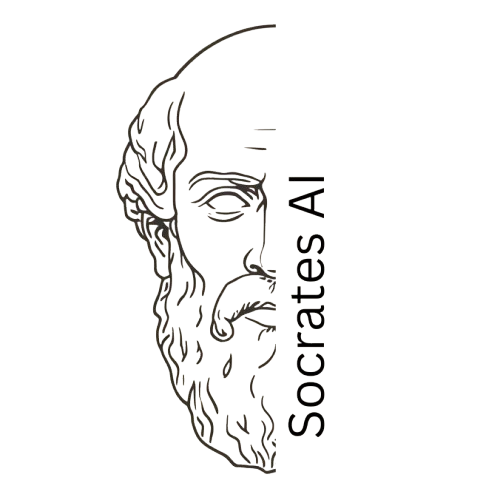

Socrates
An app for talking with four artificial Greek philosophers: Socrates, Diogenes, Plato and Aristotle. They ask hard questions and do not give verdicts. The thinking is yours.
How it works
- Choose a philosopher and write whatever is on your mind.
- He answers briefly and usually puts one question to you. Answer in your own words; when you are stuck, press Help me answer.
- Think a question all the way through with him, and you come to meet the next philosopher.
Private by design
- Your conversations are stored on your device, encrypted. There is no Socrates server and no account.
- You use your own Claude or OpenAI key; the conversation goes to that provider and nowhere else.
- No analytics, no tracking, no advertising network. Free and open source (MIT). A small card with a message from the project or a sponsor appears in its own area at the foot of the screens, never inside a conversation.
Install
Android (from F-Droid when it is listed, or the signed APK), Linux and Windows.
Good to know
- The philosophers are artificial characters made from what was written about them. They are not real people, and they are not a medical, legal or crisis service. For people aged 16 and over.
- It is a free beta. In English and Greek.
- Read the privacy policy for exactly what is stored and what leaves your device.